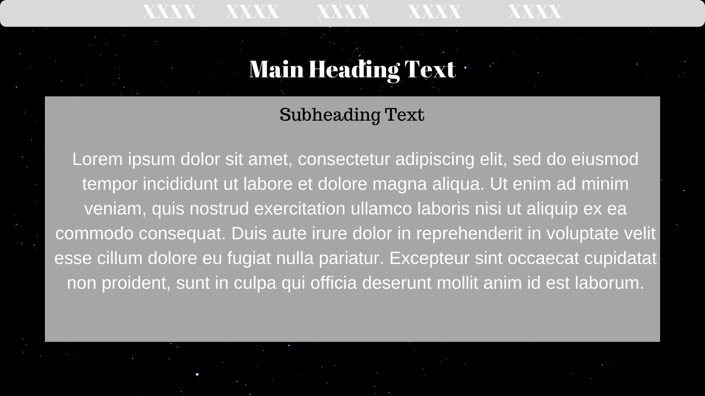
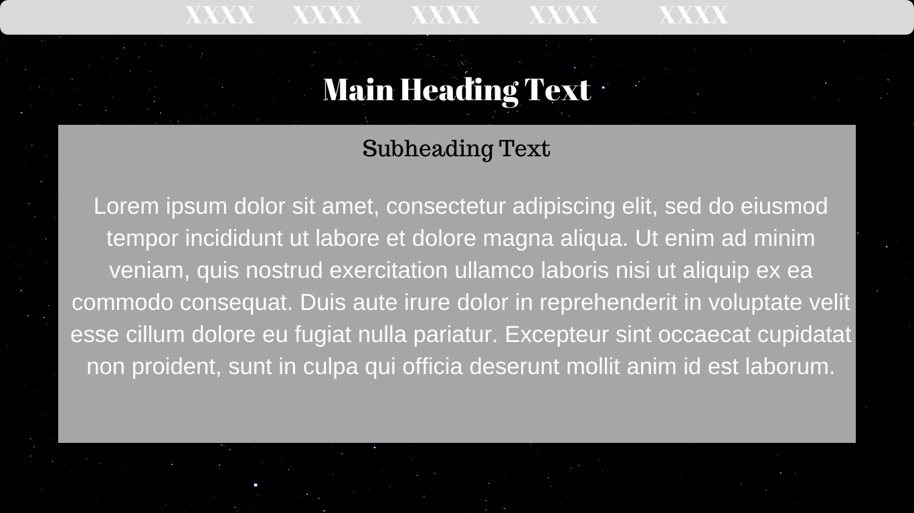
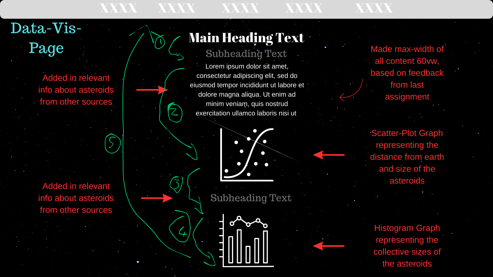
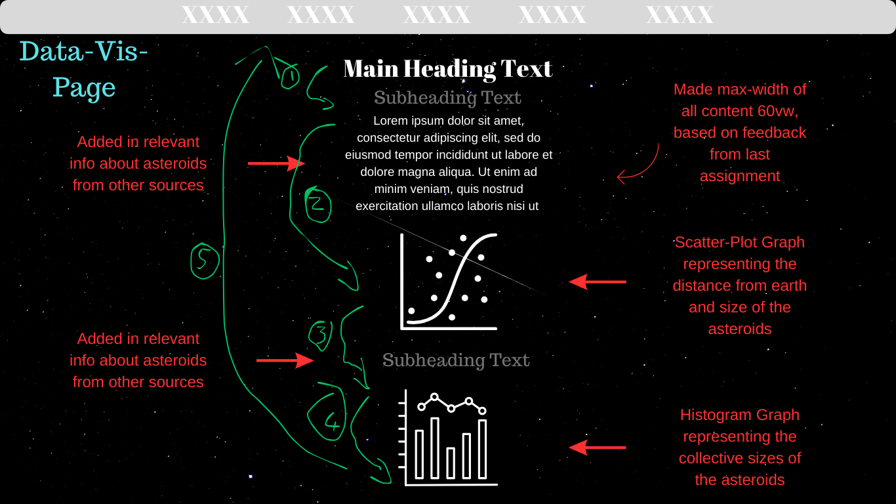

Goal Alignment - The goal for this website was to create something that would be informative, interactive and immersive, whilst making use of the Nasa Api.
Information Structure
a)Home - The home page should give a brief overview of what the website entails and what the users can expect to see. It should have links to all the other pages.
b)Blog - The blog page will have all the blogs completed throughout the semester. Ideally it should be systemized and orderly.
c)Design - The design page will be the longest page of the website. It will need to represent the design process of the website and show the improvements made throughout. It should also be orderly and systemized.
d)Data-Visualisation - The Data-Visualisation page will be the most important page of the website. It is where the Nasa Api will be used and where the data from the api will be visualized in an efficient, interactive and immersive way.
e)Data-Art - The Data-Art page is the last page of the website and is where the final data art will be represented.
Interface Elements - In terms of interface elements, the main things I will be using are links for the navigation as well as dropdown buttons for the blog posts. There will also be two buttons on the homepage which will navigate to the data-visualisation and data-art page.
Style Process
Visual Aesthetic - Due to the fact that we will be using the Nasa Api for this website, I wanted to have a space themed website. All the visual aesthetics of the website will be space themed and relate to the purpose of the website.
Visual Design Elements:
a)Fonts - The fonts I used are simple, yet common fonts. I used Verdana, Geneva, Tahoma and Sans Serif.

b)Readability - Due to using simple fonts, all my text is readable. I have made the font sizes readable as well. All important information are represented as a bold header. Over the darker, black backgrounds the text is white and over the lighter, greyish background, black text is used.
c)Colours - In aligning with the space theme and aesthetic, I have used blacks, whites and greys. These colours represent space and will tie in with the narrative and purpose of the website.
d)Colour Theory - The colour palettes I have used are a range of blacks and greys. #8f8f8f, #ffffff, #7b7b7b, #909090, #838383. All these colours blend in well together.


 

.png)
.png)
.png) 
